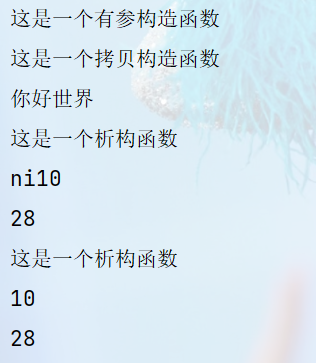

特别篇 面向对象C++¶
1. 构造函数和析构函数¶
1.1 构造函数的分类和析构函数¶
//
// Created by 李志豪 on 2024/3/30.
//
#include <iostream>
#include <string>
using namespace std;
class TEXT
{
public:
/** 无参数构造函数,当创建的类--没有参数--时调用该函数
* 调用方法: TEXT text;
*/
TEXT(){
cout << "这是一个构造函数" << endl;
}
/** 参数构造函数,当创建的类--有参数--时调用该函数
* explicit表示仅支持-显示-调用
* 常量引用 'const Type&',常量引用允许我们在函数内部访问参数的值，但不会对其进行修改
* 调用方式：
* 括号法: TEXT text("hello");
* 显示法: TEXT text1 = TEXT("hello");
* 隐式法: TEXT text2 = (string)"hello";
*/
TEXT(const string& a) {
str = a;
cout << "这是一个有参构造函数" << endl;
}
/** 拷贝构造函数,当创建的类--没有参数--时调用该函数
* 调用方法:
* 定义有参: TEXT text("hello");
* 括号法: TEXT text2(text);
* 显示法: TEXT text2 = TEXT(text);
* 隐式法: TEXT text3 = text2;
*/
TEXT(const TEXT &t){
str += t.str;
cout << "这是一个拷贝构造函数" << endl;
}
/** 析构函数,在对象被销毁时自动调用的特殊成员函数
* 无关类是否有参,销毁时都会自动调用
*/
~TEXT(){
cout << "这是一个析构函数" << endl;
cout<<str<<endl;
cout<<num<<endl;
}
private:
string str="ni";
int num = 28;
};
int test()
{
TEXT text1((string)"10"); //括号法
//调用拷贝构造函数,test2先析构
TEXT text2 = TEXT(text1); //显式法
// TEXT text3 = 10; // explicit限制了不能用隐式调用
std::cout<<"你好世界"<<std::endl;
return 0;
}
运行结果：

初始化列表
C++提供了初始化列表语法，用来初始化属性
语法：构造函数()：属性1(值1),属性2（值2）... {}
1.2 拷贝构造函数调用时机¶
class COPY
{
public:
COPY(){
age = 18;
cout << "这是一个无参构造函数" << endl;
}
explicit COPY(int age_default){
age = age_default;
cout << "这是一个有参构造函数" << endl;
}
COPY(const COPY& copy){
age = copy.age;
cout << "这是一个拷贝构造函数" << endl;
}
~COPY(){
cout << "这是一个析构函数" << endl;
}
public:
int age;
};
/* 调用时机测试函数
* 调用时机1--初始化新的类
* 调用时机2--值传递
* 调用时机3--返回值
*/
COPY doWork(COPY copy){ //拷贝
COPY copy1(10); //有参
COPY copy2(copy1); //拷贝
COPY copy3 = copy1; //拷贝
cout<<(int*)©1<<endl;
cout<<(int*)©2<<endl;
cout<<(int*)©3<<endl;
cout<<(int*)©<<endl;
return copy1; //拷贝
}
/*主函数调用接口函数
*/
int test()
{
COPY copy(10);
//2.调用时机2--值传递____调用时机3--返回值值
COPY p = doWork(copy);
return 0;
}

1.3 构造函数调用规则¶
默认情况下，c++编译器至少给一个类添加3个函数
1．默认构造函数(无参，函数体为空)
2．默认析构函数(无参，函数体为空)
3．默认拷贝构造函数，对属性进行值拷贝
构造函数调用规则如下：
- 如果用户定义有参构造函数，c++不在提供默认无参构造，但是会提供默认拷贝构造
- 如果用户定义拷贝构造函数，c++不会再提供其他构造函数
1.4 深浅拷贝⭐¶
浅拷贝：简单的赋值拷贝操作
深拷贝：在堆区重新申请空间，进行拷贝操作
当new一块堆区以后，调用默认的拷贝构造函数，会使得析构函数在重复释放内存，俗称**浅拷贝**。
在拷贝指针变量时，new一块堆区存放参数，避免重复释放，俗称**深拷贝**。
class COPY
{
public:
COPY(){
age = 18;
height = (int*)160;
cout << "这是一个无参构造函数" << endl;
}
explicit COPY(int age_default, int height_default){
age = age_default;
height = new int(height_default);
cout << "这是一个有参构造函数" << endl;
}
COPY(const COPY& copy){
age = copy.age;
//浅拷贝（系统默认）
//height = copy.height;
//深拷贝
height = new int(*copy.height);
cout << "这是一个拷贝构造函数" << endl;
}
~COPY(){
if(height != NULL)
{
delete height;
height = NULL;
}
cout << "这是一个析构函数" << endl;
}
public:
int age;
int* height;
};
1.5 静态成员¶
静态成员就是在成员变量和成员函数前加上关键字static，称为静态成员
静态成员分为：
- 静态成员变量
- 所有对象共享同一份数据
- 在编译阶段分配内存
- 类内声明，类外初始化
- 静态成员函数
- 所有对象共享同一个函数
- 静态成员函数只能访问静态成员变量
1.静态变量
class Person
{
public:
static int m_A; //静态成员变量
//静态成员变量特点：
//1 在编译阶段分配内存
//2 类内声明，类外初始化
//3 所有对象共享同一份数据
private:
static int m_B; //静态成员变量也是有访问权限的
};
int Person::m_A = 10;
int Person::m_B = 10;
void test01()
{
//静态成员变量两种访问方式
//1、通过对象
Person p1;
p1.m_A = 100;
cout << "p1.m_A = " << p1.m_A << endl;
Person p2;
p2.m_A = 200;
cout << "p1.m_A = " << p1.m_A << endl; //共享同一份数据
cout << "p2.m_A = " << p2.m_A << endl;
//2、通过类名
cout << "m_A = " << Person::m_A << endl;
//cout << "m_B = " << Person::m_B << endl; //私有权限访问不到
}
int main() {
test01();
system("pause");
return 0;
}
2.静态函数
class Person
{
public:
//静态成员函数特点：
//1 程序共享一个函数
//2 静态成员函数只能访问静态成员变量
static void func()
{
cout << "func调用" << endl;
m_A = 100;
//m_B = 100; //错误，不可以访问非静态成员变量
}
static int m_A; //静态成员变量
int m_B; //
private:
//静态成员函数也是有访问权限的
static void func2()
{
cout << "func2调用" << endl;
}
};
int Person::m_A = 10;
void test01()
{
//静态成员变量两种访问方式
//1、通过对象
Person p1;
p1.func();
//2、通过类名
Person::func();
//Person::func2(); //私有权限访问不到
}
int main() {
test01();
system("pause");
return 0;
}
2. C++对象模型和this指针¶
2.1 成员变量和成员函数分开存储¶
class Person {
public:
Person() {
mA = 0;
}
//非静态成员变量占对象空间
int mA;
//静态成员变量不占对象空间
static int mB;
//函数也不占对象空间，所有函数共享一个函数实例
void func() {
cout << "mA:" << this->mA << endl;
}
//静态成员函数也不占对象空间
static void sfunc() {
}
};
int main() {
cout << sizeof(Person) << endl;
system("pause");
return 0;
}
2.1 this指针¶
this指针指向被调用的成员函数所属的对象
this指针是隐含每一个非静态成员函数内的一种指针
this指针不需要定义，直接使用即可
this指针的用途：
- 当形参和成员变量同名时，可用this指针来区分
- 在类的非静态成员函数中返回对象本身，可使用return *this
class Person
{
public:
Person(int age)
{
//1、当形参和成员变量同名时，可用this指针来区分
this->age = age;
}
Person& PersonAddPerson(Person p)
{
this->age += p.age;
//返回对象本身
return *this;
}
int age;
};
void test01()
{
Person p1(10);
cout << "p1.age = " << p1.age << endl;
Person p2(10);
p2.PersonAddPerson(p1).PersonAddPerson(p1).PersonAddPerson(p1);
cout << "p2.age = " << p2.age << endl;
}
int main() {
test01();
system("pause");
return 0;
}
2.3 const修饰成员函数¶
常函数：
- 成员函数后加const后我们称为这个函数为**常函数**
- 常函数内不可以修改成员属性
- 成员属性声明时加关键字mutable后，在常函数中依然可以修改
常对象：
- 声明对象前加const称该对象为常对象
- 常对象只能调用常函数
class Person {
public:
Person() {
m_A = 0;
m_B = 0;
}
//this指针的本质是一个指针常量，指针的指向不可修改
//如果想让指针指向的值也不可以修改，需要声明常函数
void ShowPerson() const {
//const Type* const pointer;
//this = NULL; //不能修改指针的指向 Person* const this;
//this->mA = 100; //但是this指针指向的对象的数据是可以修改的
//const修饰成员函数，表示指针指向的内存空间的数据不能修改，除了mutable修饰的变量
this->m_B = 100;
}
void MyFunc() const {
//mA = 10000;
}
public:
int m_A;
mutable int m_B; //可修改 可变的
};
//const修饰对象 常对象
void test01() {
const Person person; //常量对象
cout << person.m_A << endl;
//person.mA = 100; //常对象不能修改成员变量的值,但是可以访问
person.m_B = 100; //但是常对象可以修改mutable修饰成员变量
//常对象访问成员函数
person.MyFunc(); //常对象不能调用const的函数
}
int main() {
test01();
system("pause");
return 0;
}
3. 友元¶
这里代码有多个重点：
1.友元的三种使用方法
- 全局函数做友元
- 类做友元
- 成员函数做友元
2.使用类外实现成员函数
3.没有修改对象属性的成员函数用const修饰
设计意图的更清晰表达，可以带来更好的可读性，方便编译器捕捉更多的错误，而且有时还会带来更多的优化机会)\
class FriendShip;
//成员函数做友元,成员函数所属的类要放在友元类的前面（不清楚为什么）
class Friend2
{
public:
Friend2();
void visit() const;
void visit2() const;
public:
FriendShip *friend2;
};
class FriendShip
{
//1.全局函数做友元,可以调用类的私有内容
friend void MyFriend(FriendShip *my_friend);
//2.类做友元
friend class Friend;
//3.成员函数做友元
friend void Friend2::visit() const;
public:
explicit FriendShip();
public:
string car;
private:
string Phone;
};
//友元类
class Friend
{
public:
Friend();
void visit() const;
public:
FriendShip *friend1;
};
// 类外实现构造函数
FriendShip::FriendShip() {
this->Phone = "Mate60Pro";
this->car = "问界M9";
}
//
Friend::Friend() {
//创建堆区数据，返回指针变量
friend1 = new FriendShip;
}
void Friend::visit() const {
cout << "---" << friend1->Phone <<endl;
}
//
Friend2::Friend2() {
friend2 = new FriendShip;
}
void Friend2::visit() const {
cout << "---" << friend2->Phone << endl;
}
void Friend2::visit2() const {
cout << friend2->car << endl;
// cout << "---" << friend2->Phone <<endl;
}
//友元函数
void MyFriend(FriendShip *my_friend)
{
cout << "---" << my_friend->Phone << endl;
}
/*主函数调用接口函数
*/
int test()
{
FriendShip myfriend;
MyFriend(&myfriend);
Friend friend1;
Friend2 friend2;
friend1.visit();
friend2.visit();
friend2.visit2();
return 0;
}
4. 运算符重载¶
略
5. 类的继承¶
5.1 基础语法¶
这里提一下C++代码规范，const和static修饰类的成员变量时的使用：
static：函数**不需要**访问类的实例状态并且**不修改**任何成员变量const：函数**不修改**任何成员变量并且只是对类状态的**只读操作**
这里用的是
static，友元的实例有的是const
#include <iostream>
using namespace std;
class Base
{
public:
static void name() {
cout << "姓名" << endl;
}
static void age() {
cout << "年龄" << endl;
}
};
class HUAWEI: public Base
{
public:
static void content() {
cout << "问界" << endl;
}
};
int test2(){
//
HUAWEI::name();
HUAWEI::age();
HUAWEI::content();
return 0;
}
5.2 继承类型¶

class Base
{
public:
static void name() {
cout << "姓名" << endl;
}
static void age() {
cout << "年龄" << endl;
}
int public_a;
protected:
int protect_a;
private:
int private_a;
};
class HUAWEI: public Base
{
public:
void content() {
this->public_a = 10;
this->protect_a = 15;
cout << this->protect_a << this->public_a << endl;
}
};
class XIAOMI: protected Base
{
public:
void content() {
//public_a变 protected
this->public_a = 11;
this->protect_a = 16;
cout << this->protect_a << this->public_a << endl;
}
};
class HONOR: private Base
{
public:
void content() {
//public_a和protect_a都变为private
this->public_a = 12;
this->protect_a = 17;
//这里private_a无法被继承
// this->private_a = 20;
cout << this->protect_a << this->public_a << endl;
}
};
int test2(){
HUAWEI huawei;
huawei.content();
XIAOMI xiaomi;
xiaomi.content();
HONOR honor;
honor.content();
return 0;
}
父类中私有成员也是被子类继承下去了，只是由编译器给隐藏后访问不到
5.3 继承中构造和析构顺序¶
继承中 先调用父类构造函数，再调用子类构造函数，析构顺序与构造相反
class Base
{
public:
Base()
{
cout << "Base构造函数!" << endl;
}
~Base()
{
cout << "Base析构函数!" << endl;
}
};
class Son : public Base
{
public:
Son()
{
cout << "Son构造函数!" << endl;
}
~Son()
{
cout << "Son析构函数!" << endl;
}
};
void test01()
{
//继承中 先调用父类构造函数，再调用子类构造函数，析构顺序与构造相反
Son s;
}
int main() {
test01();
system("pause");
return 0;
}

5.4 #继承同名成员处理办法¶
总结：
- 子类对象可以直接访问到子类中同名成员
- 子类对象加作用域可以访问到父类同名成员
- 当子类与父类拥有同名的成员函数，子类会隐藏父类中同名成员函数，加作用域可以访问到父类中同名函数
s.Base::m_A或s.Base::func()
5.5 #多继承¶
C++允许**一个类继承多个类**
语法：class 子类 ：继承方式 父类1 ， 继承方式 父类2...
多继承可能会引发父类中有同名成员出现，需要加作用域区分
C++实际开发中不建议用多继承
5.6 菱形继承¶
菱形继承概念：
两个派生类继承同一个基类
又有某个类同时继承者两个派生类
这种继承被称为菱形继承，或者钻石继承
典型的菱形继承案例：

class Animal
{
public:
int m_Age;
};
//继承前加virtual关键字后，变为虚继承
//此时公共的父类Animal称为虚基类
class Sheep : virtual public Animal {};
class Tuo : virtual public Animal {};
class SheepTuo : public Sheep, public Tuo {};
void test01()
{
SheepTuo st;
st.Sheep::m_Age = 100;
st.Tuo::m_Age = 200;
cout << "st.Sheep::m_Age = " << st.Sheep::m_Age << endl;
cout << "st.Tuo::m_Age = " << st.Tuo::m_Age << endl;
cout << "st.m_Age = " << st.m_Age << endl;
}
int main() {
test01();
system("pause");
return 0;
}
6. 多态¶
6.1 基本概念¶
多态是C++面向对象三大特性之一
多态分为两类
- 静态多态: 函数重载 和 运算符重载属于静态多态，复用函数名
- 动态多态: 派生类和虚函数实现运行时多态
静态多态和动态多态区别：
- 静态多态的函数地址早绑定 - 编译阶段确定函数地址
- 动态多态的函数地址晚绑定 - 运行阶段确定函数地址
class Animal
{
public:
//Speak函数就是虚函数
//函数前面加上virtual关键字，变成虚函数，那么编译器在编译的时候就不能确定函数调用了。
virtual void speak()
{
cout << "动物在说话" << endl;
}
};
class Cat :public Animal
{
public:
void speak()
{
cout << "小猫在说话" << endl;
}
};
class Dog :public Animal
{
public:
void speak()
{
cout << "小狗在说话" << endl;
}
};
//我们希望传入什么对象，那么就调用什么对象的函数
//如果函数地址在编译阶段就能确定，那么静态联编
//如果函数地址在运行阶段才能确定，就是动态联编
void DoSpeak(Animal & animal)
{
animal.speak();
}
//
//多态满足条件：
//1、有继承关系
//2、子类重写父类中的虚函数
//多态使用：
//父类指针或引用指向子类对象
void test01()
{
Cat cat;
DoSpeak(cat);
Dog dog;
DoSpeak(dog);
}
int main() {
test01();
system("pause");
return 0;
}
总结：
多态满足条件
- 有继承关系
- 子类重写父类中的虚函数
多态使用条件**☆**
- 父类指针或引用指向子类对象
重写：函数返回值类型 函数名 参数列表 完全一致称为重写
计算器案例
//普通实现
class Calculator {
public:
int getResult(string oper)
{
if (oper == "+") {
return m_Num1 + m_Num2;
}
else if (oper == "-") {
return m_Num1 - m_Num2;
}
else if (oper == "*") {
return m_Num1 * m_Num2;
}
//如果要提供新的运算，需要修改源码
}
public:
int m_Num1;
int m_Num2;
};
void test01()
{
//普通实现测试
Calculator c;
c.m_Num1 = 10;
c.m_Num2 = 10;
cout << c.m_Num1 << " + " << c.m_Num2 << " = " << c.getResult("+") << endl;
cout << c.m_Num1 << " - " << c.m_Num2 << " = " << c.getResult("-") << endl;
cout << c.m_Num1 << " * " << c.m_Num2 << " = " << c.getResult("*") << endl;
}
//多态实现
//抽象计算器类
//多态优点：代码组织结构清晰，可读性强，利于前期和后期的扩展以及维护
class AbstractCalculator
{
public :
virtual int getResult()
{
return 0;
}
int m_Num1;
int m_Num2;
};
//加法计算器
class AddCalculator :public AbstractCalculator
{
public:
int getResult()
{
return m_Num1 + m_Num2;
}
};
//减法计算器
class SubCalculator :public AbstractCalculator
{
public:
int getResult()
{
return m_Num1 - m_Num2;
}
};
//乘法计算器
class MulCalculator :public AbstractCalculator
{
public:
int getResult()
{
return m_Num1 * m_Num2;
}
};
void test02()
{
//创建加法计算器
AbstractCalculator *abc = new AddCalculator;
abc->m_Num1 = 10;
abc->m_Num2 = 10;
cout << abc->m_Num1 << " + " << abc->m_Num2 << " = " << abc->getResult() << endl;
delete abc; //用完了记得销毁
//创建减法计算器
abc = new SubCalculator;
abc->m_Num1 = 10;
abc->m_Num2 = 10;
cout << abc->m_Num1 << " - " << abc->m_Num2 << " = " << abc->getResult() << endl;
delete abc;
//创建乘法计算器
abc = new MulCalculator;
abc->m_Num1 = 10;
abc->m_Num2 = 10;
cout << abc->m_Num1 << " * " << abc->m_Num2 << " = " << abc->getResult() << endl;
delete abc;
}
int main() {
//test01();
test02();
system("pause");
return 0;
}
6.2 纯虚函数和抽象类¶
在多态中，通常父类中虚函数的实现是毫无意义的，主要都是调用子类重写的内容
因此可以将虚函数改为**纯虚函数**
纯虚函数语法：virtual 返回值类型 函数名 （参数列表）= 0 ;
当类中有了纯虚函数，这个类也称为==抽象类==
抽象类特点：
- 无法实例化对象
- 子类必须重写抽象类中的纯虚函数，否则也属于抽象类
示例：
class Base
{
public:
//纯虚函数
//类中只要有一个纯虚函数就称为抽象类
//抽象类无法实例化对象
//子类必须重写父类中的纯虚函数，否则也属于抽象类
virtual void func() = 0;
};
class Son :public Base
{
public:
virtual void func()
{
cout << "func调用" << endl;
};
};
void test01()
{
Base * base = NULL;
//base = new Base; // 错误，抽象类无法实例化对象
base = new Son;
base->func();
delete base;//记得销毁
}
int main() {
test01();
system("pause");
return 0;
}
6.3 虚析构和纯虚析构¶
多态使用时，如果子类中有属性开辟到堆区，那么父类指针在释放时无法调用到子类的析构代码
解决方式：将父类中的析构函数改为**虚析构**或者**纯虚析构**
虚析构和纯虚析构共性：
- 可以解决父类指针释放子类对象
- 都需要有具体的函数实现
虚析构和纯虚析构区别：
- 如果是纯虚析构，该类属于抽象类，无法实例化对象
虚析构语法：
virtual ~类名(){}
纯虚析构语法：
virtual ~类名() = 0;
类名::~类名(){}
示例：
class Animal {
public:
Animal()
{
cout << "Animal 构造函数调用！" << endl;
}
virtual void Speak() = 0;
//析构函数加上virtual关键字，变成虚析构函数
//virtual ~Animal()
//{
// cout << "Animal虚析构函数调用！" << endl;
//}
virtual ~Animal() = 0;
};
Animal::~Animal()
{
cout << "Animal 纯虚析构函数调用！" << endl;
}
//和包含普通纯虚函数的类一样，包含了纯虚析构函数的类也是一个抽象类。不能够被实例化。
class Cat : public Animal {
public:
Cat(string name)
{
cout << "Cat构造函数调用！" << endl;
m_Name = new string(name);
}
virtual void Speak()
{
cout << *m_Name << "小猫在说话!" << endl;
}
~Cat()
{
cout << "Cat析构函数调用!" << endl;
if (this->m_Name != NULL) {
delete m_Name;
m_Name = NULL;
}
}
public:
string *m_Name;
};
void test01()
{
Animal *animal = new Cat("Tom");
animal->Speak();
//通过父类指针去释放，会导致子类对象可能清理不干净，造成内存泄漏
//怎么解决？给基类增加一个虚析构函数
//虚析构函数就是用来解决通过父类指针释放子类对象
delete animal;
}
int main() {
test01();
system("pause");
return 0;
}
总结：
1. 虚析构或纯虚析构就是用来解决通过父类指针释放子类对象
2. 如果子类中没有堆区数据，可以不写为虚析构或纯虚析构
3. 拥有纯虚析构函数的类也属于抽象类